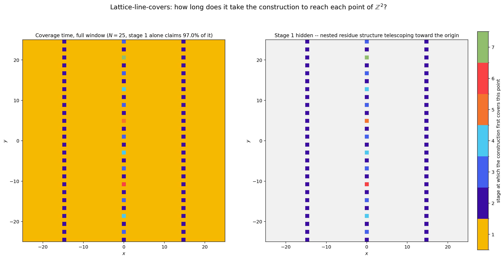
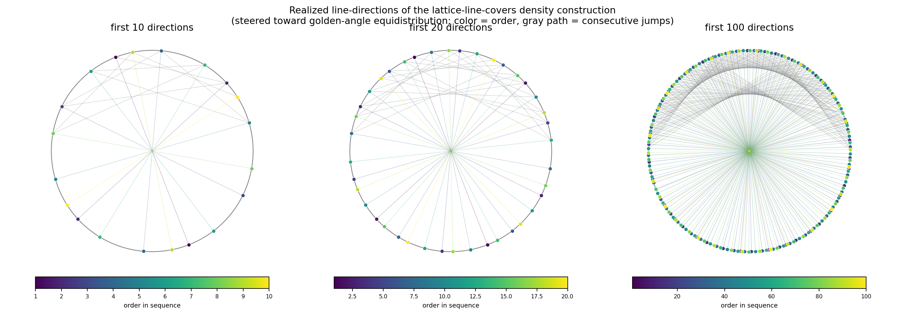
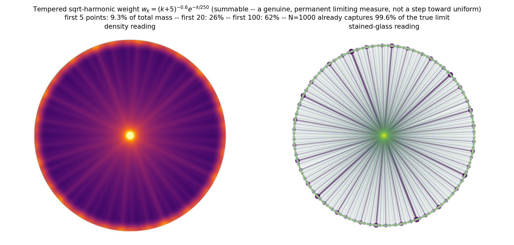

A machine-checked Lean/Mathlib formalization of the recursive lattice-line covering construction was completed as a complementary verification effort.
Abstract
We consider families of lines that cover every point of the integer lattice $\mathbf{Z}^2$ in the plane, subject to the constraint that no two lines of different direction in the family meet at a lattice point. Restricting to lattice lines (lines containing at least two, hence infinitely many, lattice points, equivalently of rational direction), we show that the set of directions occurring in such a covering can be made dense in the space of line directions. The construction is a recursive splitting of $\mathbf{Z}^2$ into nested rank-2 sublattice cosets, each handed off to a freshly chosen direction; the key technical point is a steering lemma showing that at every stage of the recursion a new direction arbitrarily close to any prescribed target can still be realized, via an elementary sieve bound.
Problem
Cover every point of the integer lattice Z^2 by lattice lines (rational-direction lines) such that no two lines of different directions meet at a lattice point. The question is which sets of line directions can occur in such a covering.
Approach
A rigidity lemma characterizes when two lattice lines of distinct directions cross at a lattice point, and a coset lemma describes unions of parallel lattice lines. A recursive splitting of Z^2 into nested rank-2 sublattice cosets hands each off to a freshly chosen direction. A steering lemma, via an elementary sieve bound, ensures a new direction arbitrarily close to any prescribed target is realizable at every recursion stage. The argument was checked by brute-force simulation and independently formalized in Lean/Mathlib.

Figure 9. \mathrm{stage}(u,v) over a 51\times 51 window ( N=25 ) of the run behind Figure 7 . Left: the full window — stage 1 alone (gold) already claims 97.0\% of it, since the first direction excludes only a single residue class. Right: stage 1 hidden, revealing that of the three residual columns visible on the left, only the one nearest the origin keeps recursing (through stages 3 – 7 , telesco
Results
The set of directions occurring in such a covering can be made dense in the space RP^1 of line directions. The construction realizes directions targeting an equidistributed sequence, and a Lean/Mathlib formalization of the argument was completed.

Figure 7. Realized directions after 10 , 20 , and 100 steps of the construction, colored by order (dark = early, light = late), with a thin path tracing consecutive jumps. The steering argument scatters the directions rather than sweeps them around the circle, since each target angle is chosen from an equidistributed sequence rather than visited in angular order.

Figure 8. 1000 realized directions redrawn as point and line masses on the closed unit disc, weighted by the summable w_{k}=(k+5)^{-0.6}e^{-k/250} so the picture shows a genuine limiting measure rather than a step toward the uniform measure on \mathbb{RP}^{1} (see main text). Left: a smoothed density reading. Right: an order-colored overlay of the same weighted points and chords (dark purple = ear